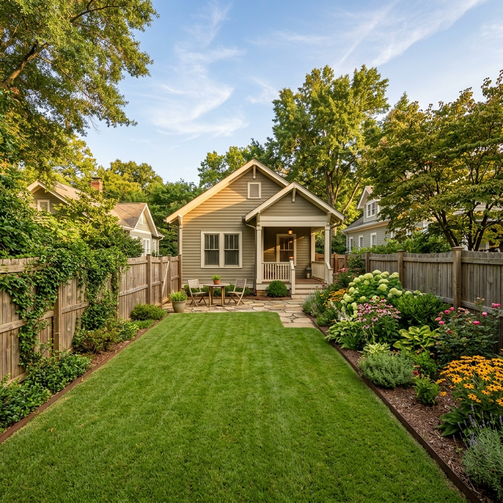

Budget Project Case Study #012
Reclaiming garden space on a tight Decatur lot using professional "Partial Abandonment" techniques.
"We needed the pool gone to make room for a vegetable garden and to stop the constant maintenance costs. We weren't planning on building a structure in that spot, so the budget-friendly partial fill was the perfect solution for us." — Homeowner, Avondale border

A partial pool fill significantly reduces machine time and hauling fees.
When a standard excavator won't fit, we go small.
Standard pool demo equipment requires at least 8-10 feet of clearance. On this Decatur property, the gap between the house and the neighboring property's historic fence was exactly 62 inches.
We utilized a 36-inch mini-skid steer and a micro-excavator. This allowed us to ferry 80 tons of material in and out without removing a single piece of the client's fencing.
Breaking of the tile line and drilling 2-foot diameter drainage holes in the pool floor.
Ferrying soil via micro-machinery and compacting in 12-inch lifts to ensure no settling.
Applying final nutrient-rich soil; raking to a smooth finish; site vacuum and gate cleanup.
Get a budget-friendly estimate for your tight-access property.
Request Budget Estimate